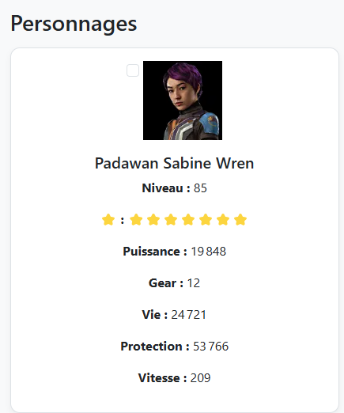

Tests d’intégration & d’acceptation d’un service
Projet : SWGOH API Viewer
Description du projet
Ce projet exploite l'API publique de swgoh.gg afin d'afficher dynamiquement les données des personnages du jeu
Star Wars Galaxy of Heroes. Toutes les données sont récupérées via des requêtes Fetch et intégrées dans une interface responsive.
Site du projet :
swgoh-info-stat.byethost12.com
Présentation complète du projet :
Voir la page descriptive
Tests d’intégration
Les tests d’intégration ont vérifié la connexion entre l’API swgoh.gg et l’affichage dynamique du site :
- Réception correcte des données JSON via Fetch.
- Injection dynamique dans le DOM (statistiques, images, noms…).
- Correspondance fiable API ➝ interface utilisateur.

Extrait d'un fichier JSON récupéré depuis l’API

Affichage web correspondant après intégration
Tests d’acceptation
Les tests d’acceptation ont validé l’expérience utilisateur :
- Affichage fluide et informations accessibles rapidement.
- Navigation simple entre les fiches de personnages.
- Compatibilité mobile / responsive design.